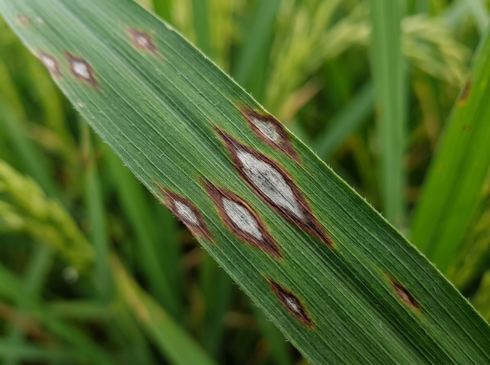
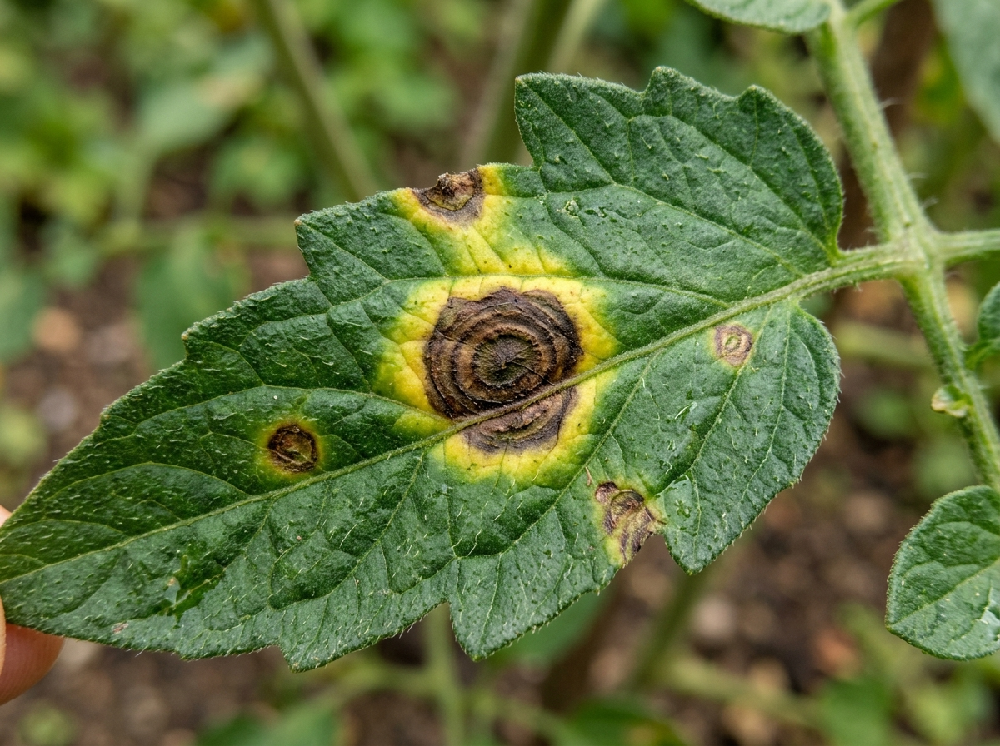
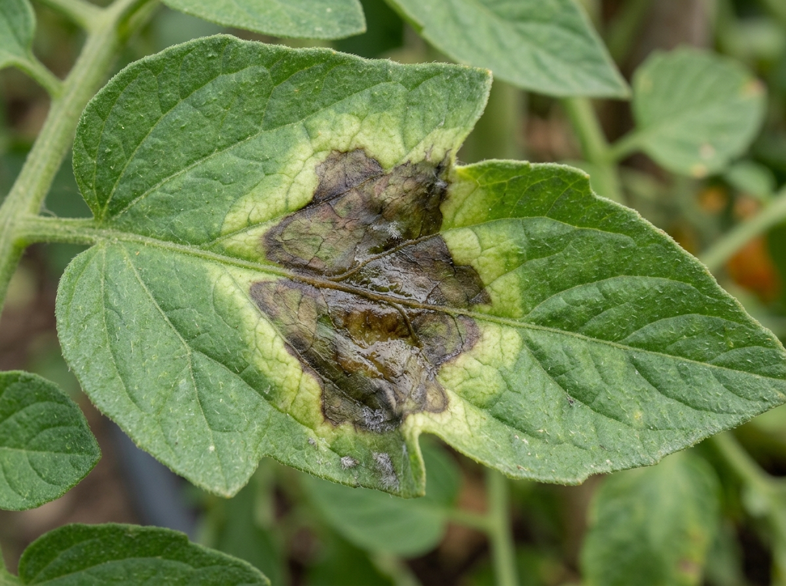
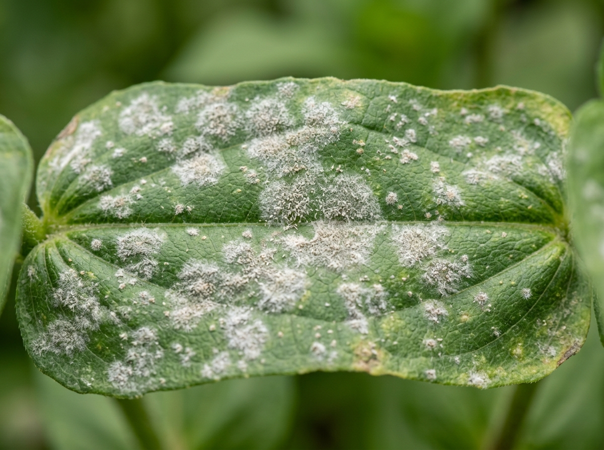
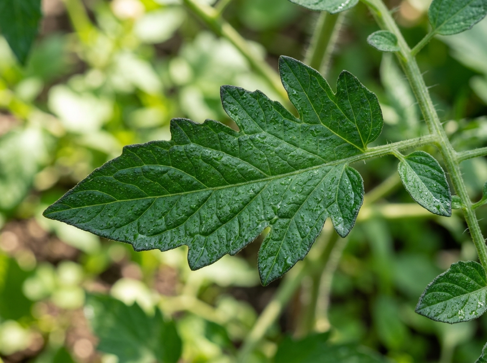

🍃 PlantVillage Sample Leaf Images (Demo Dataset)
6 Sample Leaf Classes
Rice Blast
CriticalPathogen: Magnaporthe oryzae
Spindle-shaped grey-white lesions with dark brown borders.

Tomato Early Blight
HighPathogen: Alternaria solani
Concentric target-like rings with surrounding yellow halo.

Tomato Late Blight
CriticalPathogen: Phytophthora infestans
Dark water-soaked expanding lesions in humid conditions.

Powdery Mildew
MediumPathogen: Erysiphe polygoni
White powdery fungal patches on upper leaf surfaces.
Healthy Rice
HealthyCondition: Normal Leaf
Vibrant green leaf blades without spots or fungal discoloration.

Healthy Tomato
HealthyCondition: Normal Foliage
Deep green compound leaves with crisp edges and firm veins.
📊 Database Seed Records
Seed Script Tested👨🌾 3 Farmer Profiles
Pre-populated with location coordinates, phone contacts, and crops:
- Ramesh Kumar (Karnal, HR) — Rice & Wheat
- Sunita Devi (Nashik, MH) — Tomato & Cotton
- Vijay Patel (Rajkot, GJ) — Groundnut & Tomato
🔬 10 Past Diagnoses
Historical AI diagnoses with confidence scores & treatment plans:
- Rice Blast (96.4% confidence)
- Tomato Late Blight (98.2% confidence)
- Powdery Mildew (93.1% confidence)
🚨 8 Regional Alert Hotspots
Geospatial disease alerts for map visualization:
- Karnal Rice Belt (Radius: 35 km)
- Nashik Horticultural Zone (Radius: 25 km)
- Rajkot Groundnut Cluster (Radius: 18 km)
🎨 Shared Design Tokens & Typography (`Outfit`)
Google Font OutfitColor Swatches
#022c22
#114e29
#15803d
#16a34a
#d97706
#ef4444
UI Component Showcase
Drag & drop leaf photo here
Supports JPG, PNG (Max 10MB)